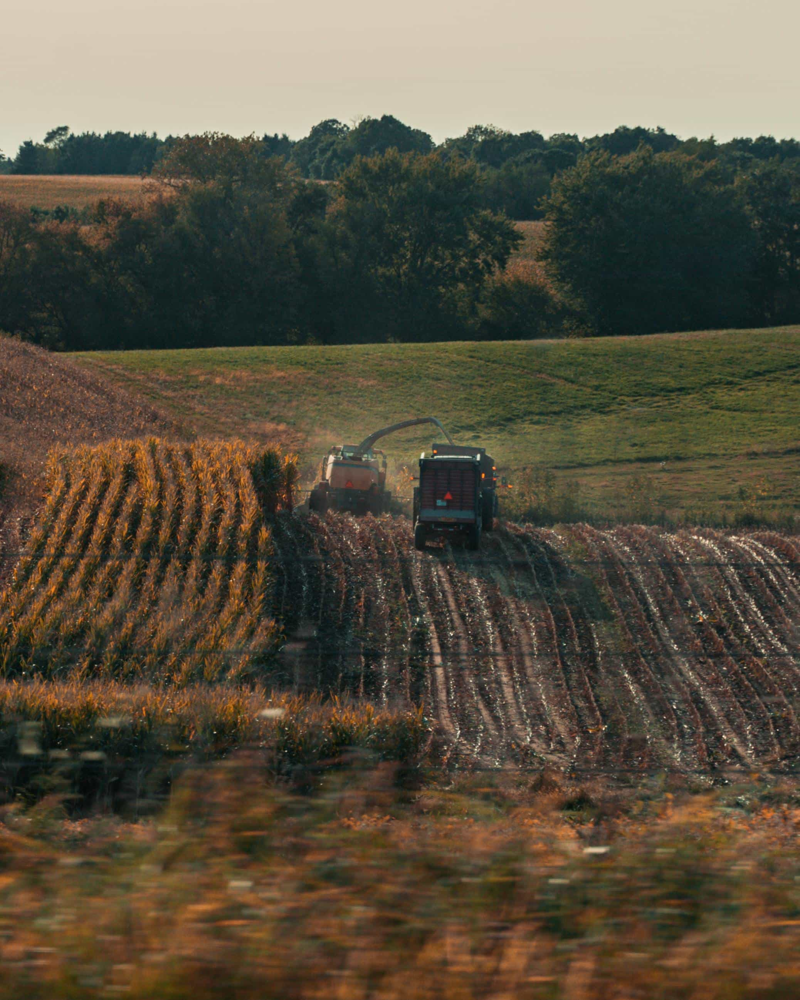
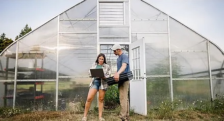
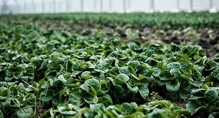
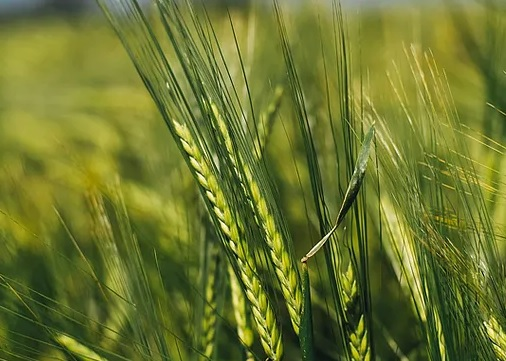
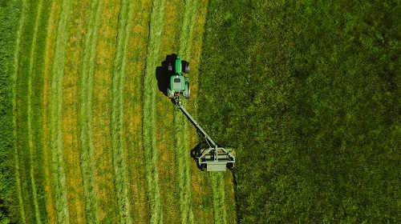

Designed for Modern Agricultural Living
We blend traditional farming wisdom with modern comfort, creating spaces and expriences that feel natural, calm, and intentionally crafted

Sustainable Leaf Lorem, ipsum.
Farming that respects natureHands-on Experience Lorem, ipsum.
Learn by doingThoughtful Farm Design Lorem, ipsum.
Where function meets calmWe Curate agricultural experiences for individuals, families, and communities who seek meaningful connections with nature.From planting and harvesting to understanding food systems, every activity is designed to educate, inspire, and empower.
Immersive Agricultural Experiences
Explore, learn, and grow through carefully designed farm-based activities.
Nature & Harvest Experience
Participate in real harvesting activities while learning about crop cycles and sustainable methods
Farm-to-Table Discovery
Participate in real harvesting activities while learning about crop cycles and sustainable methods
Discover Growth with
Confidence
Our programs are designed for beginners and enthusiasts alike. With clear guidance, safe environments, and supportive mentors, you'll gain practical skills and a deeper appreciation for agriculture.
Start Your Journey
From Soil to Harvest
Every harvest reflects our commitment to sustainable farming, careful cultivation, and respect for natural growth cycles. theses are the results of patience, precision, and care.
See AllFrequently Asked Questions
What should I prepare before visiting?
comfortable clothing, closed shoes, and a willingness to learn.Do you support group or school visits?
comfortable clothing, closed shoes, and a willingness to learn.Are your farming methods environmentally friendly?
comfortable clothing, closed shoes, and a willingness to learn.Is this experience suitable for beginners?
comfortable clothing, closed shoes, and a willingness to learn.